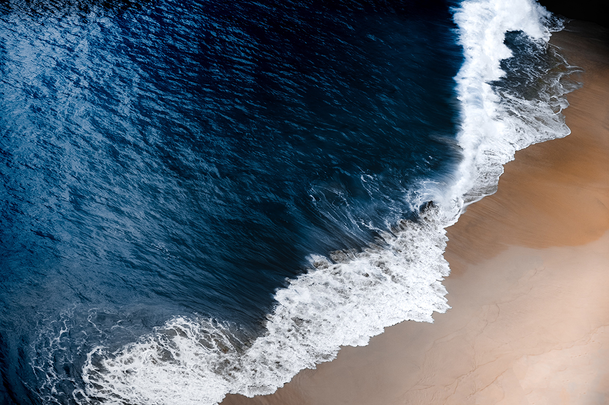
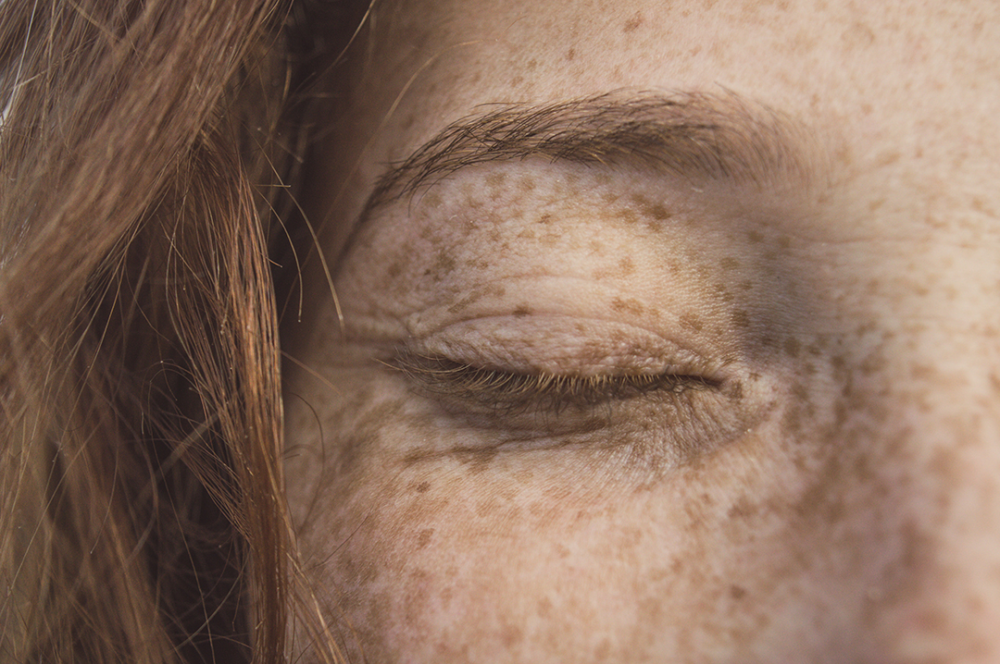

Salicorne verte bio
Récoltée manuellement dans les salines de mai à fin juillet.
Baco.work présente
Une lecture plus calme et plus ample du projet : pas de planches, pas de compositions chargées, seulement des images plein écran et un texte éditorial qui laisse respirer la matière.
Entrer dans les salines
Origine
Les eaux-mères sont associées à l’action de végétaux et de sédiments marins choisis pour leur effet sur la vitalité de la peau. Ici, la mer n’est pas un décor : elle est la base active du récit.
Argile, plantes, algues, sel. La force du projet tient dans cette chaîne courte et lisible, entre territoire, extraction et soin.

Base de données fournie
Récoltée manuellement dans les salines de mai à fin juillet.
Issue de la floraison, récoltée à partir du mois d’août.
Ramassée au râteau dans les salines au printemps.
Prélevés avec finesse et à la main, dans le respect de la saisonnalité.

Effets recherchés
Maintien de l’hydratation cutanée par une matière riche, aqueuse et protectrice.
Des plantes halophytes capables de développer leur propre système de défense.
Des actions purifiantes et rééquilibrantes portées par les sédiments et les sels marins.

Positionnement
Le projet ne doit plus seulement évoquer les marais salants. Il doit faire sentir une marque scientifique, premium et précise, sans perdre la douceur du territoire.
C’est pourquoi l’image est repensée ici comme un champ respirant : grands cadres, lumière juste, peu de signes, et un texte séparé des visuels pour laisser la matière parler.